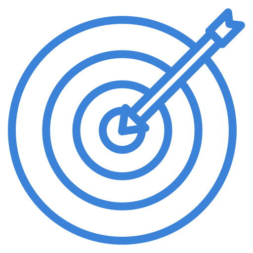
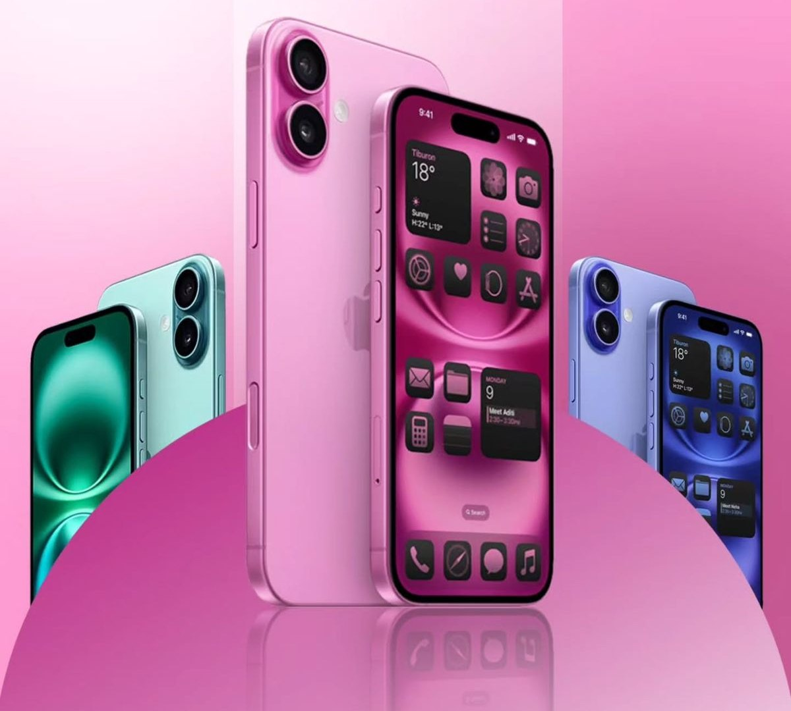

Un home simplificado que deja de competir por atención con decenas de carruseles, y en su lugar empieza la visita conociendo al usuario para mostrarle recomendaciones específicas.
Research
Para entender qué frena a un usuario en el home actual de Amazon, se revisaron sesiones de benchmarking sobre el sitio original y comentarios de compradores frecuentes y ocasionales sobre su experiencia de navegación.
Se siente abrumado por la cantidad de banners, carruseles y promociones compitiendo por atención en la portada.
El home necesita reducir elementos y darle a cada sección un único propósito.
Siente que el catálogo mostrado es genérico y no refleja lo que realmente busca o le interesa.
Conocer al usuario desde el primer minuto permite mostrar contenido relevante, no un catálogo al azar.
No identifica rápido dónde filtrar por categoría, precio o marca entre tanto contenido.
Los filtros necesitan un lugar propio, visible y con jerarquía clara — no compitiendo con banners.
Metodología
Investigación sobre el home original y sus puntos de fricción reales.
Filtrar hallazgos hacia un punto de vista claro: simplificar y personalizar.
Explorar arquitectura, filtros y el flujo del quiz de personalización.
Construir el sistema de diseño y el sitio en alta fidelidad.
Descubrir qué funciona, qué falla y refinar antes de publicar.
El home original acumula banners, carruseles y promociones compitiendo por atención, sin ninguna capa de personalización real para quien llega por primera vez.
Reducir el ruido visual, dar jerarquía clara a cada sección, y conocer al usuario desde el primer minuto para mostrarle recomendaciones específicas en vez de un catálogo genérico.
Un home simplificado en paleta y tipografía, con un quiz de personalización de 4 preguntas y una barra de filtros clara y flotante sobre el hero.
MVP Scope
una sola paleta, tipografía en 3 niveles y una acción principal por sección.

un quiz de 4 preguntas que ajusta el contenido mostrado desde la primera visita.
Taskflows
Estructura y Navegación
Userflow
Inspiración

Test de usabilidad moderado sobre el sitio en vivo, con tareas guiadas.
"Entras por primera vez a Amazon buscando actualizar tu setup de trabajo."
Compradores frecuentes y ocasionales de e-commerce, distintos niveles de familiaridad digital.
| U1 | U2 | U3 | Prom. | |
|---|---|---|---|---|
| Tarea 1 | 1 | 1 | 1 | 1 |
| Tarea 2 | 1 | 0 | 1 | 0.6 |
| Tarea 3 | 1 | 1 | 1 | 1 |
| U1 | U2 | U3 | Prom. | |
|---|---|---|---|---|
| Tarea 1 | 5 | 6 | 5 | 5.3 |
| Tarea 2 | 3 | 5 | 3 | 3.6 |
| Tarea 3 | 3 | 4 | 3 | 3.3 |
¿Qué tan útil se sintió personalizar el inicio con el quiz?
¿Qué tan claro fue encontrar los filtros de producto?
¿Qué tan ordenado se ve el home comparado con el original?
Resultado final
El sitio real, publicado y funcional — cada frame de abajo es la página en vivo, incluido el quiz de personalización en React.